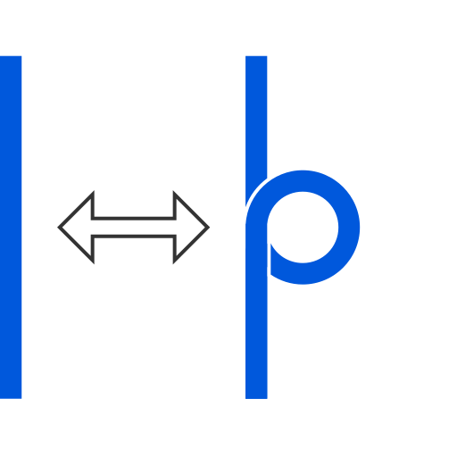
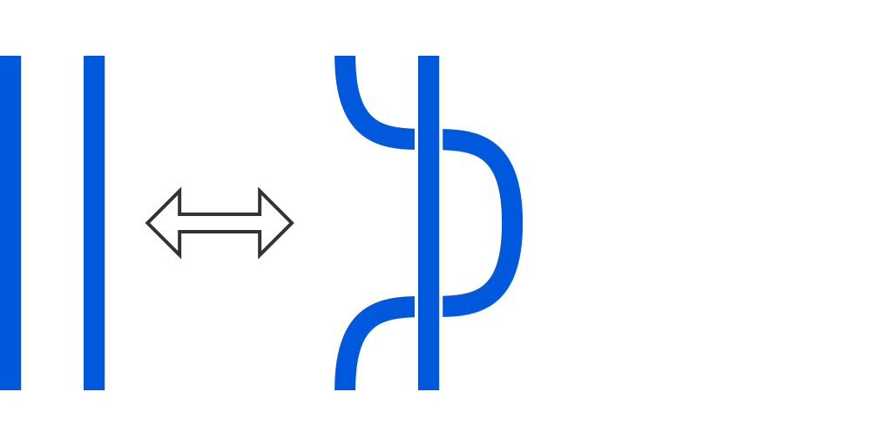
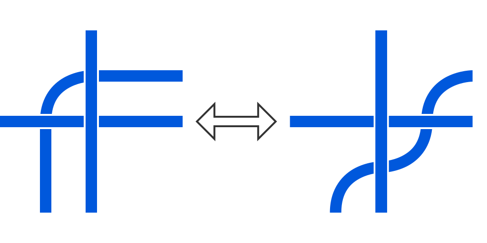

Główny problem
Równoważność
Teoria węzłów jest częścią topologii, czyli działu matematyki zajmującego się kształtami i przestrzeniami. Jednak w odróżnieniu od geometrii, nie są dla niej istotne wszystkie odległośći lub kąty w danym kształcie, ale jego bardziej ogólne własności, np. wymiar, liczba otworów, itd.
Głównym problemem teorii węzłów jest, mając dane dwa węzły, rozstrzygnąć, czy są one takie same. Jednak nie chodzi tu o to, czy mają one ten sam rozmiar lub czy ich poszczególne punkty znajdują się w odpowiedznich odległościach. W teorii węzłów dwa węzły są takie same, jeżeli możemy jeden z nich przekształcić w drugi bez rozcinania go (można to traktować, jakby węzły zrobione z gumy lub podobnego materiału), co formalnie nazywane jest równoważnością węzłów.
Przykładowo poniższe dwa węzły są równoważne, ponieważ drugi można otrzymać z pierwszego przez wydłużennie jego fragmentu.

W tym przypadku pierwszy z węzłów uzyskamy odwracając pętlę drugiego.

Ruchy Reidemeistera
Węzły to obiekty trójwymiarowe, ale często (w tym na tej stronie) przedstawia się je na płaszczyźnie. Taki obraz nazywany jest diagramem węzła. Musi on jednak być jednoznaczny, przez co np. zaznacza się która część węzła przebiega nad skrzyżowaniem oraz przez jeden punkt nie mogą przechodzić więcej niż dwa fragmenty węzła.
Okazuje się, że na podstawie samych diagramów można określić, czy przedstawiają one równoważne węzły. Równoważność zachodzi, gdy jeden z diagramów możemy przekształcić w drugi używając dowolnego ciągu 3 rodzajów przekształceń, które nazywamy ruchami Reidemeistera na cześć ich odkrywcy.
-
Pierwszy ruch polega na zakręceniu (odkręceniu) prostej pętli:
 -
Drugim ruchem jest wsunięcie (wysunięcie) prostego fragmentu diagramu nad (pod) inny:
 -
Trzeci ruch pozwala przesunąć prostą część, która cała przechodzi nad (pod) skrzyżowaniem na drugą jego stronę:

Niezmienniki
Niezmiennik węzła to taka jego cecha (lub obiekt, który można mu przyporządkować), która pozostaje niezmieniona dla wszystkich węzłów równoważnych do niego. Zatem, jeżeli jest on różny dla dwóch węzłów, to pozwala definitywnie stwierdzić, że są różne. Nie jest jednak gwarantowane, że dwa węzły mające tą samą wartość niezmiennika są równoważne.
Przykładowym niezmiennikiem jest trójkolorowalność. Polega ona na tym, że diagram węzła można pokolorować trzema kolorami według następujących zasad
- należy użyć co najmniej dwóch kolorów
- fragmenty spotykające się przy skrzyżowaniu muszą być tego samego albo wszystkie różnych kolorów:
Przykładem węzła trójkolorowalnego jest trójlistnik: